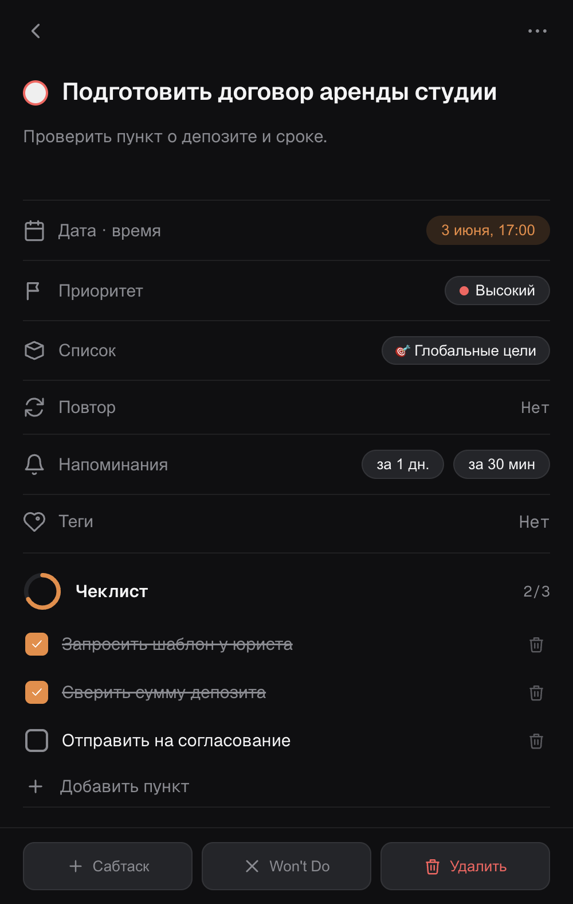
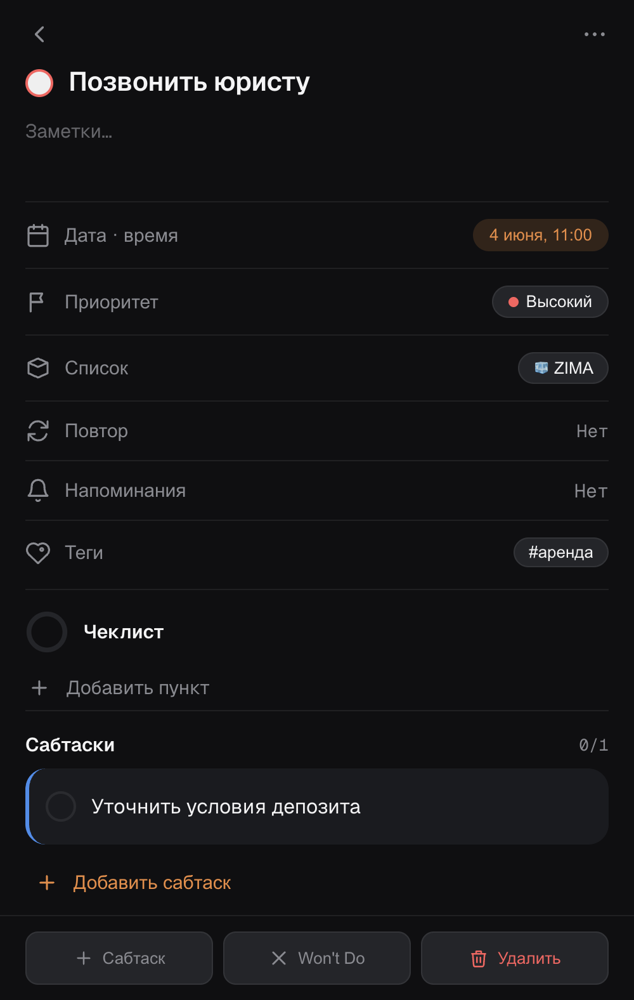
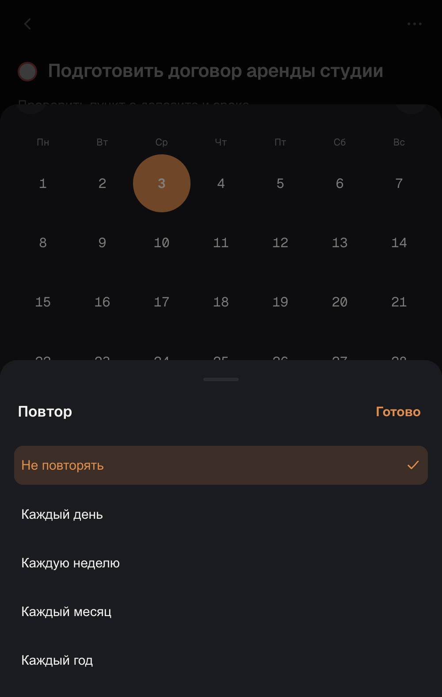
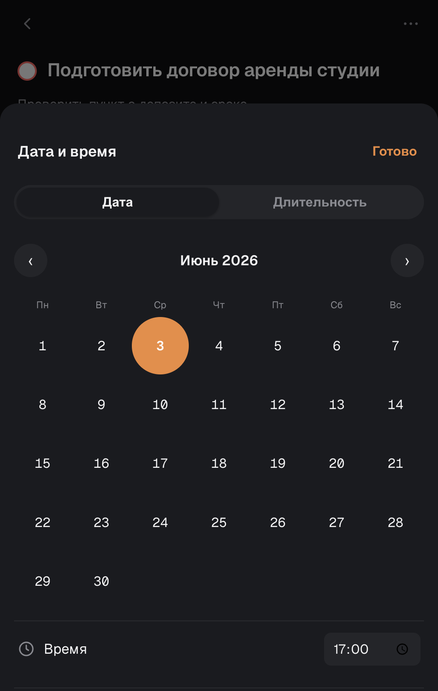
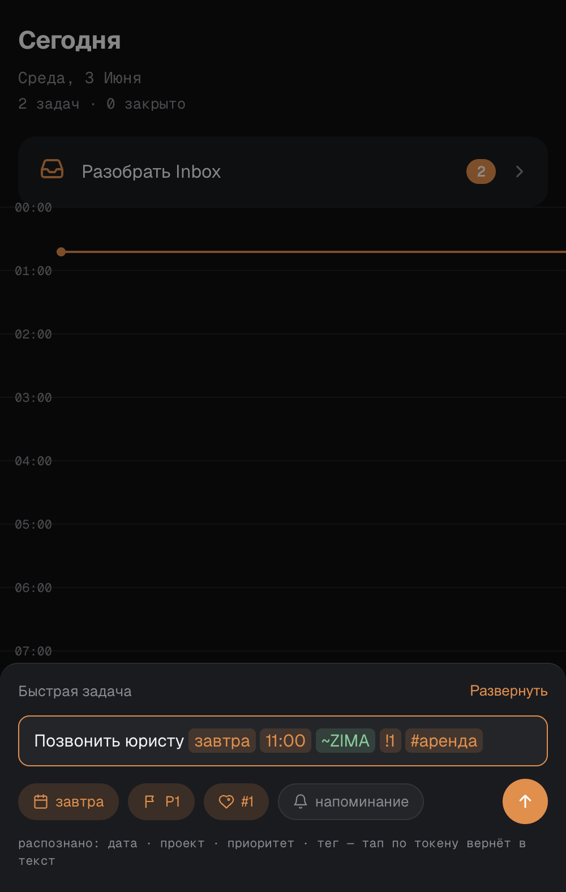
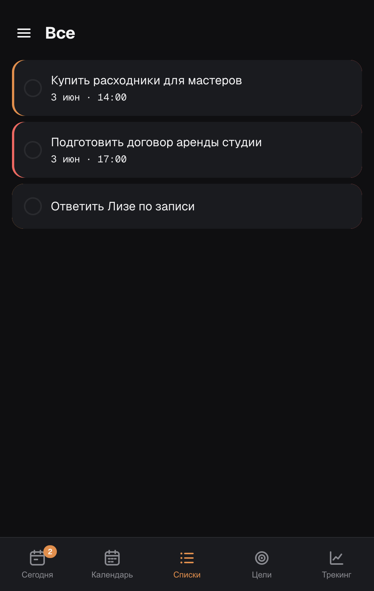
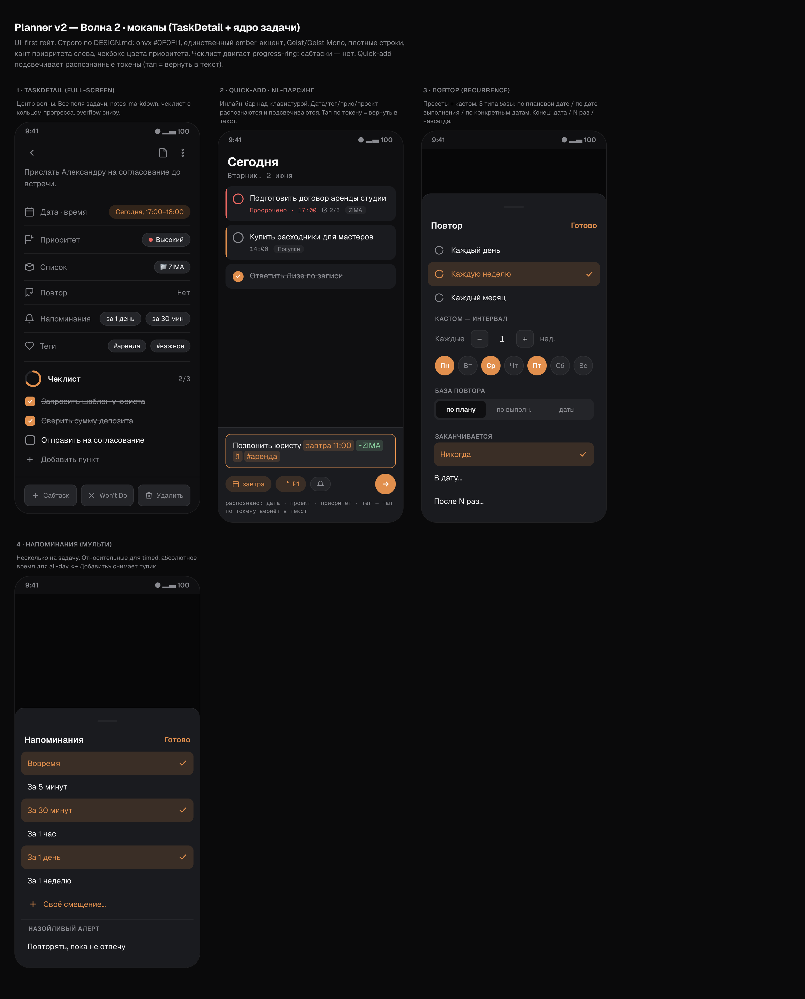
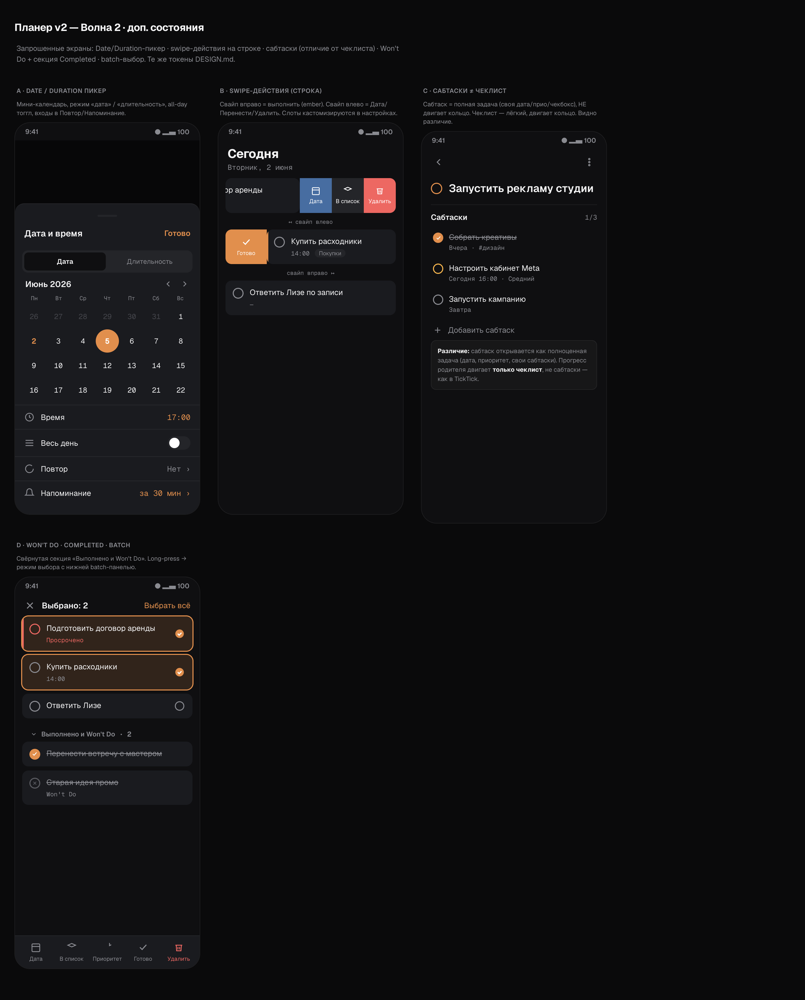

Волна 2 (ядро задачи) собрана и задеплоена на прод + перф-фикс лагов. Ниже — живые скриншоты (реальные данные, локальный прод-стек). Главное смотреть на телефоне в боте — это живое приложение.
Раньше задача не открывалась. Теперь — все поля, заметки, чеклист с кольцом прогресса (чеклист двигает кольцо, сабтаски нет), мульти-напоминания, структурный повтор, сабтаски, overflow (Сабтаск/Won't Do/Удалить).




FAB → быстрый ввод. Пишешь «Позвонить юристу завтра 11:00 ~ZIMA !1 #аренда» → дата/проект/приоритет/тег распознаются, подсвечиваются, создаётся готовая задача. Поймал тут реальный баг (невидимый текст) и починил.


8 экранов, которые ты согласовал перед сборкой.


Жалоба «всё лагучее». Нашёл корень (приложение перерисовывало лишнее + ремонтило экран при каждом переключении). Два фикса задеплоены: JS-работа на переключение −86%. Замеры в session-логе.